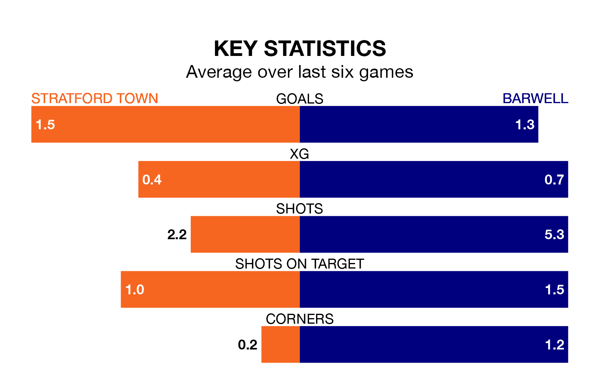

Barwell travel looking to secure a first win in five Southern League Premier Central games against Stratford Town on Saturday.
Barwell have lost one and drawn three matches since they last earned three points – against Stourbridge on December 16.
They face a Stratford side who have won two and drawn one over that time.
With 44 goals in 25 games so far this season, Stratford are scoring more than average in the league with 1.8 goals per game. And they are conceding at an average rate, letting in 37 goals at a rate of 1.5 per game.
Barwell are also above average scorers, with 1.6 goals per game, compared to a league average of 1.5. They have also conceded 1.6 goals per game.
Town are fifth in the table after 25 games, of which they have won 13 and drawn four, earning 43 points.
The visitors are six places behind the home side in 11th, with eight wins and 10 draws putting them on 34 points.
In the last three years, Stratford and Barwell have played each other on five occasions. Stratford won one of them, Barwell three, and they drew once.
On average, Town scored 0.8 goals and Barwell 1.6 in those matches.
Their last meeting was on August 12, when Barwell won 1-0 at home.
Stratford's last match was on January 6, a 2-1 win against Stamford.
Barwell drew 2-2 with Alvechurch last time out, also on January 6.
Updated: 11:31, 09/01/24